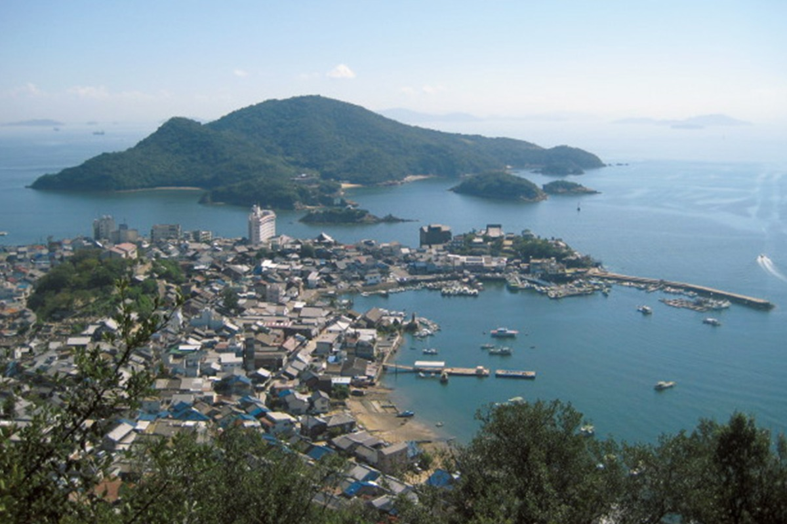
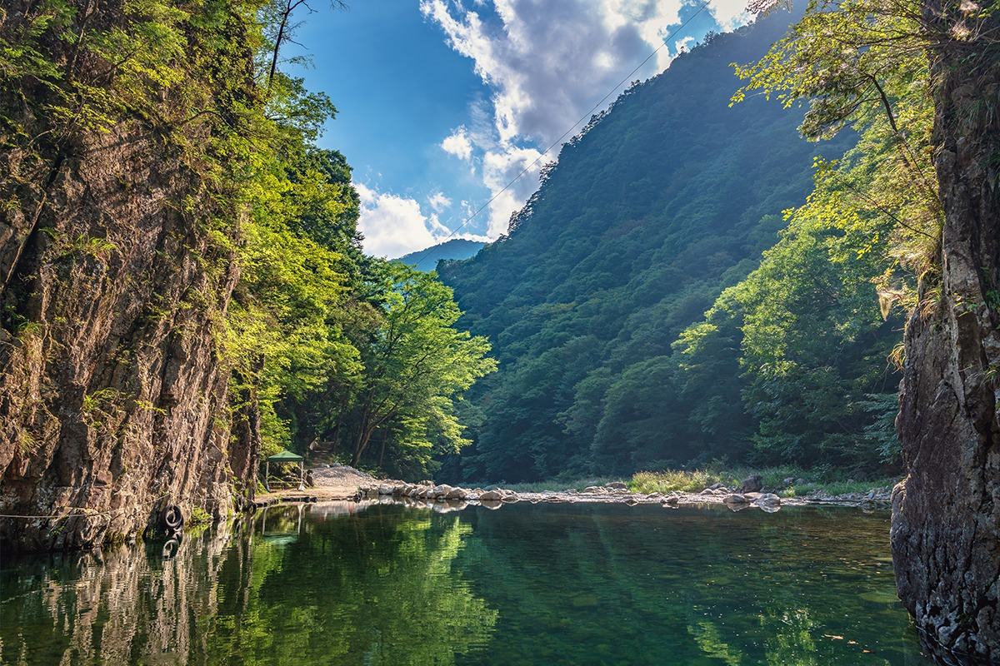
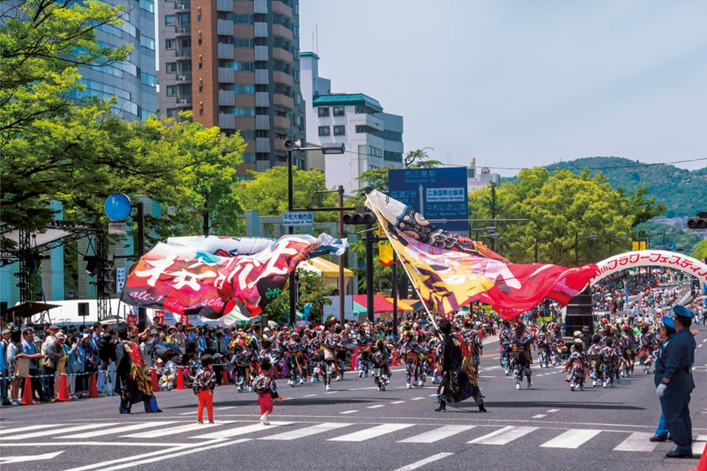
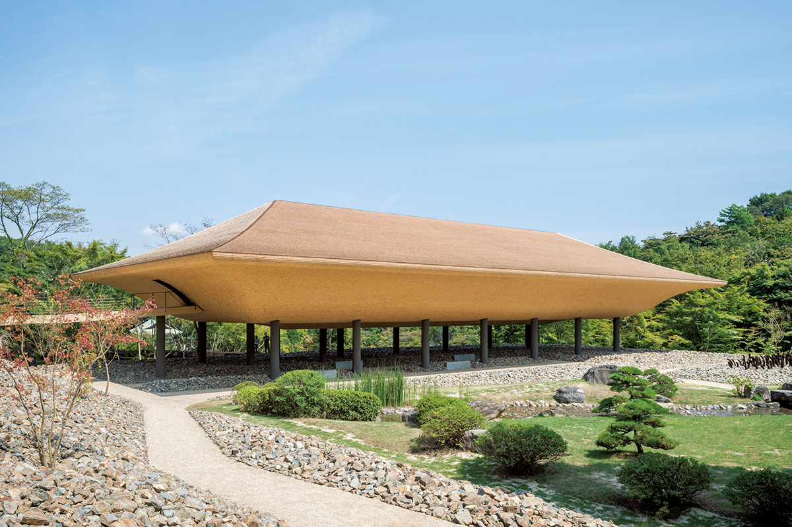
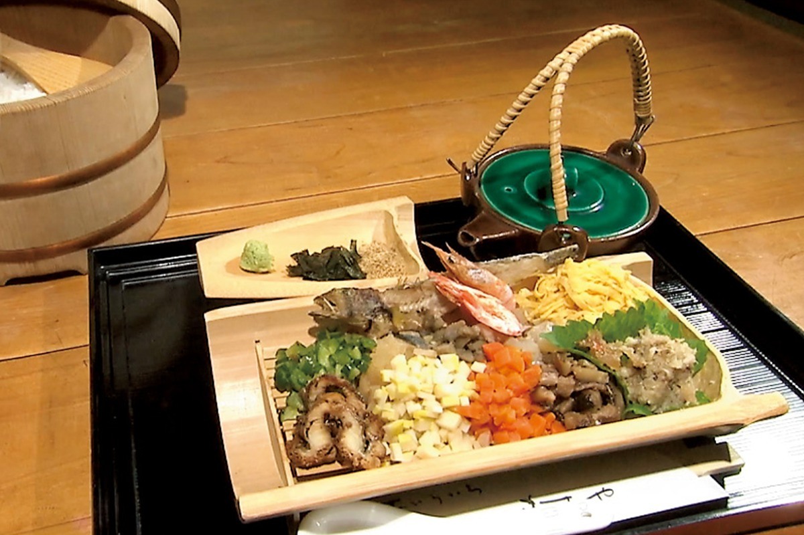
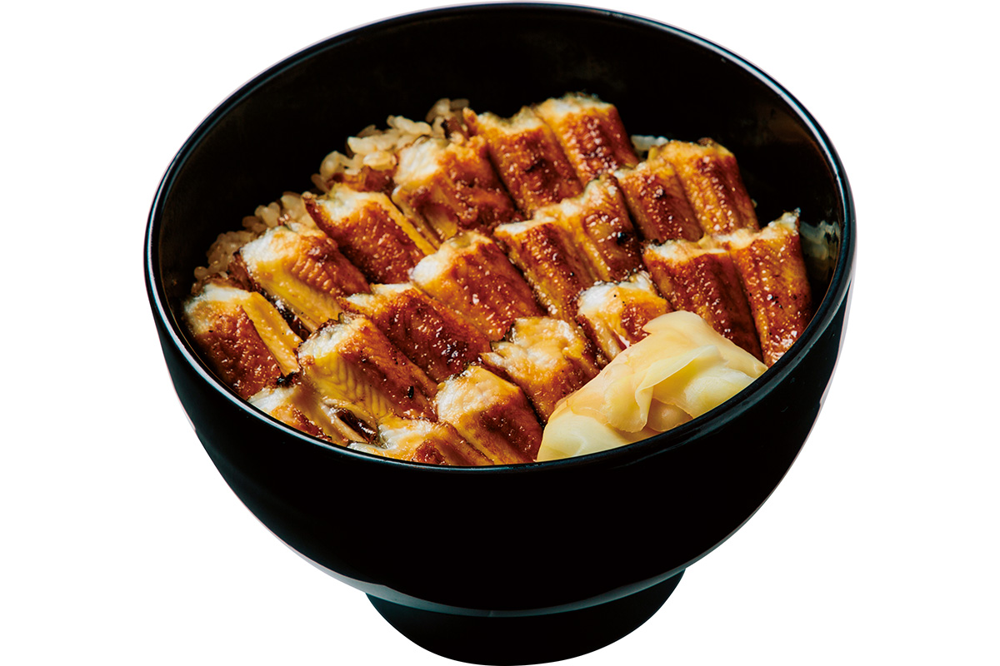
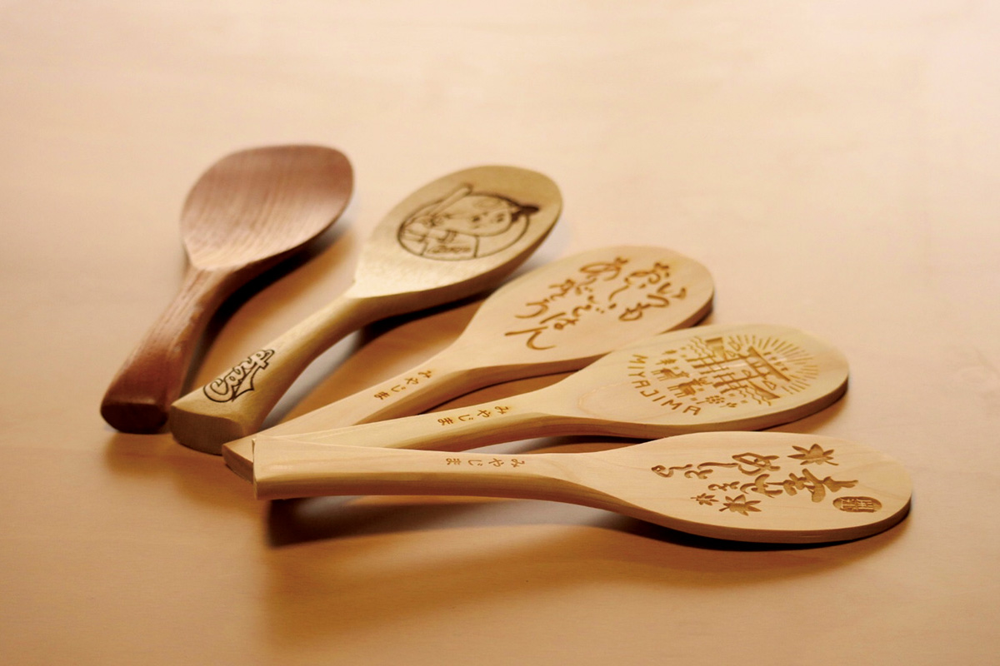
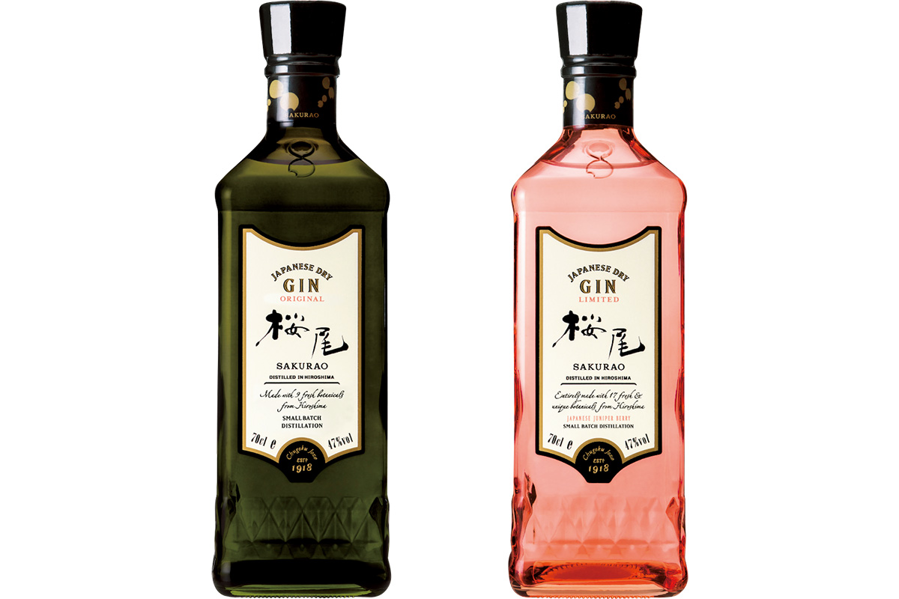
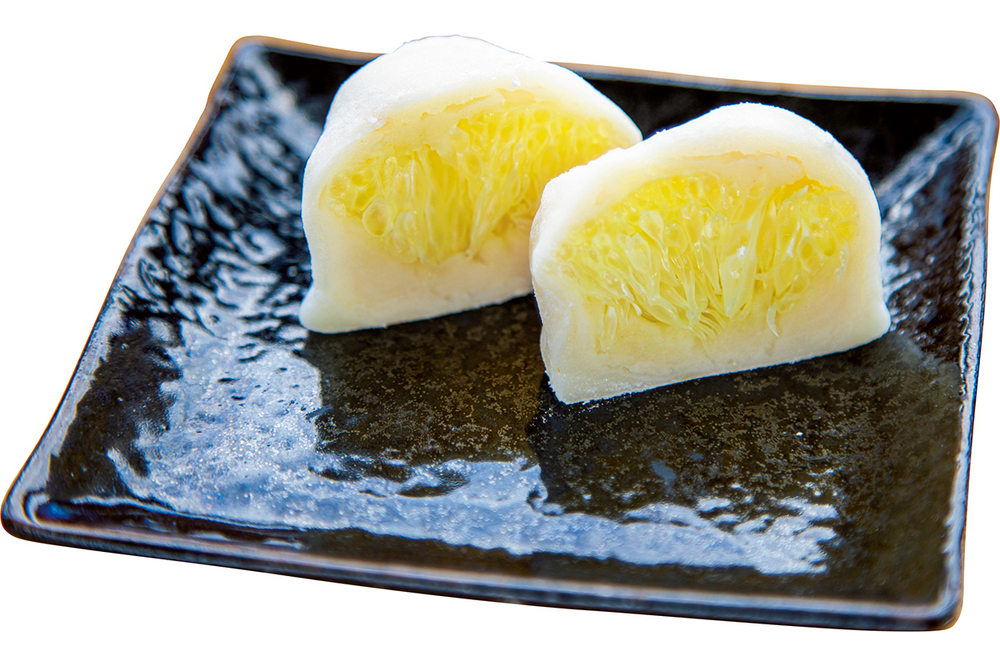

Префектура Хиросима
Хиросима: море, острова и город, который поднялся заново

Тихий залив Томоноура: в море выступают лесистые острова, а на берегу теснятся старые дома и лодки.
Два объекта всемирного наследия, спокойное Внутреннее море с сотнями островов, лимоны и устрицы, которых в Японии больше всего, и город, отстроенный заново. Рассказываем, за чем ехать в префектуру Хиросима.
О префектуре
Море, которое кормит, и город, который собрали заново
Хиросима занимает центральное место в регионе Тюгоку и Сикоку. Город пережил первую в мире атомную бомбардировку и поднялся заново: сегодня это один из главных центров запада страны. В эпоху Сэнгоку, то есть воюющих провинций, с середины XV века, здесь действовал полководец Мори Мотонари, герой притчи о трёх стрелах, которые не сломать, если связать их вместе. С эпохи Мэйдзи, с конца XIX века, и до самой бомбардировки город был одной из главных военно-морских баз страны, и здесь даже размещалась ставка императорского командования.
Сегодня в префектуре два объекта всемирного наследия: святилище Ицукусима и Купол Гэмбаку, то есть Атомный купол. Туристов притягивают город Курэ, где строили линкор «Ямато», и острова Внутреннего моря Сэто. Устриц здесь разводят больше, чем где-либо в стране. Ономити, начало маршрута Симанами по мостам между островами, это ещё и порт круизного лайнера: рейсы начинаются у местного курортного отеля Belavista Spa & Marina Onomichi, а рядом стоит храм Сэнкодзи.
Спорт здесь любят не меньше моря: за бейсбольной командой «Хиросима Карп» у экранов следят больше 70 процентов зрителей префектуры, а футбольный клуб «Санфречче Хиросима» играет в высшей лиге.
Что посмотреть
Старый порт, который помнит парусники
Томоноура
Томоноура это тихая бухта на Внутреннем море, где прямо из воды поднимаются лесистые острова Сэнсуй и Бэнтэн. Порт разбогател на торговле с другими странами, и здесь до сих пор стоят старые дома, храмы и причалы. Улицы так похожи на прежнюю Японию, что тут постоянно снимают кино.
- Телефон
- +81 84-928-1042
- Справки
- туристический отдел города Фукуяма
Что ещё посмотреть
- Миядзима, остров со святилищем Ицукусима, чьи ворота-тории стоят прямо в воде
- Санданкё, ущелье с отвесными скалами и зелёной водой
- Тайсяку-кё, второе большое ущелье префектуры, названное в честь индийского божества Тайсяку

Праздники
Праздник цветов и мира на весь город
Фестиваль цветов в Хиросиме
Каждый год в первые дни мая, когда в Японии идут чередой майские праздники «золотой недели», город украшают парады, сцены и цветочные композиции. Фестиваль задуман как праздник мира и цветов, и на него съезжается больше 1,6 миллиона человек.

- Период
- начало мая
- Место
- проспект Хэйва-Одори, парк Мира и другие места в Хиросиме
Другие праздники
- О-дори в Бинго-Тодзё, шествие по улицам, само название значит «проход»
- Мибу-но ханатауэ, обрядовое высаживание риса с песнями и барабанами
- Ясса в Михаре, городской праздник с танцевальным шествием
Музеи и архитектура
Павильон, который плывёт над каменным садом
Храм Синсёдзи: музей дзэн и сада
При храме Синсёдзи работает музей, где дзэн показывают через искусство и архитектуру. Главный объект это арт-павильон «Коотэй» длиной 46 метров: он стоит на столбах среди камней, а его деревянная крыша похожа на перевёрнутый корпус корабля. Рядом разбит сад и работает ресторан.

- Адрес
- 91 Kaminanyama, Numakuma-cho, Fukuyama, Hiroshima
- Телефон
- +81 84-988-1111
- Сайт
- szmg.jp
Что ещё посмотреть
- Музей Окуда, собрание работ семьи художников
- Музей искусств Ономити, городское собрание живописи
- Музей современного искусства Хиросимы, коллекция искусства XX века
Местная кухня
Рис, который подавали хозяевам соляных промыслов
Уо-мэси
Название уо-мэси так и переводится: «рыбный рис». Это угощение из города Такэхара, который звали соляной столицей: так хозяева соляных промыслов принимали гостей. На рис кладут крошку из белой рыбы и овощи, а перед едой заливают бульоном даси, то есть бульоном из водорослей и сушёной рыбы.

Что ещё попробовать
- Мисю-набэ, густой набэ, то есть блюдо, которое варят в одном горшке за столом, родом из городка Сайдзё
- Ономити-рамэн, лапша родом из города Ономити
- Окономияки, лепёшка из капусты и яиц, которую жарят на решётке за столом
Где поесть
Угорь на рисе, которого ждут больше ста лет
Анаго-мэси Уэно
Этому ресторану у паромной переправы на Миядзиму больше ста лет. Рис здесь варят в бульоне из костей угря, а сверху укладывают куски угря, поджаренного в густом соусе.

- Адрес
- 1-5-11 Miyajimaguchi, Hatsukaichi, Hiroshima
- Телефон
- +81 829-56-0006
- Время работы
- с 10:00 до 19:00, по средам до 18:00, закрывают раньше, если блюдо закончилось
- Выходные
- нет
- Сайт
- anagomeshi.com
Ремёсла
Лопаточка, которая приносит удачу
Лопаточки для риса из Миядзимы
Сямо-дзи, лопаточка для риса, на Миядзиме стала ещё и талисманом на удачу. В магазине «Дом лопаточек» на готовое изделие выжигают любое имя или слово, и такой брелок стоит от 500 иен.

- Телефон
- +81 829-44-0084
- Сайт
- shakushi.jp
Что привезти
Джин с именем города и цитрус в сладости
Джин SAKURAO
Компания «Тюгоку дзодзо» варит в Хиросиме сухой джин: рецепт соединяет давнюю традицию с новыми идеями, а травы для него берут местные.

- Телефон
- +81 829-32-2111
Хассаку-дайфуку
Хассаку это японский цитрус размером с крупный апельсин. В лавке «Хассакуя» его дольки заворачивают в белую пасту из бобов и мягкое рисовое тесто моти. Одно пирожное стоит 200 иен.

- Телефон
- +81 845-24-0715
Где остановиться
Ночлег в доме, который придумали заново
LOG
LOG это первый в Японии проект индийского бюро Studio Mumbai: старый бетонный жилой дом середины прошлого века переделали в небольшой отель. Внизу работают кафе и сад, куда приходят гулять горожане.
- Адрес
- 11-12 Higashidodo-cho, Onomichi, Hiroshima
- Телефон
- +81 848-24-6669
- Комнат
- 6, из них 3 номера делюкс с большой кроватью
- Цена
- от 31 350 иен за ночь с двумя приёмами пищи, налоги и обслуживание включены
- Сайт
- l-og.jp
Местный диалект
Как здесь говорят «очень вкусно»
- бути умай нооочень вкусно
- бутиочень, сильно
- тайгиихлопотно, лень
- таудоходить, дойти до места
Рекорды
В чём Хиросима первая в стране
- №1 лимоны: первое место по урожаю
- №2 устрицы: первое место по очищенному мясу
- №3 спортивные трансляции: первое место по доле смотрящих
Вопросы и ответы
Что ещё спрашивают о Хиросиме
Какое блюдо из Сайдзё готовят на сакэ и приправах?
Мисю-набэ. Для него не берут ни капли воды: бульон дают сакэ и сок овощей. Блюдо придумали в городке Сайдзё, центре сакэварения, как еду для работников пивоварен: простая приправа не мешает пробовать сакэ.
Что значит «татимати» на местном говоре?
«Пока что, для начала». Фраза «татимати мэси куоояа» значит «давай пока поедим». В литературном языке это слово означает «в мгновение ока», поэтому за пределами Хиросимы легко запутаться.
Справочник
Хиросима в цифрах
| Центр префектуры | город Хиросима |
| Города и посёлки | 14 городов, 9 посёлков |
| Площадь | 8480 кв. км |
| Население | 2,82 миллиона человек |
| Плотность населения | 332,2 человека на кв. км |
| Туристов за год | 5,93 миллиона |
| Дерево префектуры | клён |
| Цветок префектуры | клён |
| Птица префектуры | гагара |
| Средняя температура | +16,8 |
| Максимум | +34,7 |
| Минимум | +1,0 |
| Осадки | 1879 мм |
| Ясных дней | 37 |
| Дождливых дней | 81 |
| Снежных дней | 32 |
| Онсэнов | 61 |
| Гостиниц и рёканов | 726 |
| Музеев искусств | 19 |
| Музеев | 89 |
| Митиноэки, придорожных станций | 19 |
| Национальных сокровищ | святилище Ицукусима: главное здание, малое святилище Коясу, галереи, всего 26 |
| Важных культурных ценностей | 226 |
| Исторических мест | 41 |
| Природных памятников | 16 |
| Всемирное наследие | Купол Гэмбаку и святилище Ицукусима |
| Национальные парки | Внутреннее море Сэто, Хиба-Дого-Тайсяку, Западный Тюгоку, всего 3 |
Природные памятники
- О-баси, природная каменная арка
- Большой конский каштан Кумано, старое дерево, известное всей округе
- Разлом Фунаса и Ямаути, место, где видно смещение земных слоёв
- Роща святилища Тадауми-Хатиман, старый лес вокруг святилища